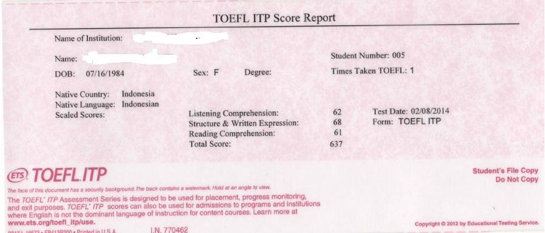

Frequently Asked Questions
Q : Apa yang dimaksud mahasiswa baru dan mahasiswa on-going?
A : Mahasiswa baru adalah mahasiswa yang baru mendapatkan surat keterangan lulus di perguruan tinggi atau mahasiswa yang baru melaksanakan perkuliahan di semester 1 dan belum mendapatkan KHS. Sedangkan mahasiswa on-going adalah mahasiswa yang sudah memulai perkuliahan maksimal semester 2 (semua jenjang).
Q : Bagaimana apabila alamat KTP saya tidak berasal dari daerah 3T?
A : Silakan pilih golongan umum.
Q : Apakah saya bisa mengajukan permohonan bantuan dana riset skripsi/tesis/disertasi?
A : Tidak bisa. Program Beasiswa Unggulan 2018 tidak menerima permohonan bantuan dana riset skripsi/tesis/disertasi.
Q : Siapa saja yang bisa mendaftar Beasiswa Pegawai Kemendikbud? Apakah guru bisa mendaftar?
A : Yang dimaksud pegawai kemendikbud adalah Pegawai Negeri Sipil Kemendikbud pusat dan Lembaga Penjamin Mutu Pendidikan daerah. Untuk guru silahkan mendaftar di Beasiswa Masyarakat Berprestasi atau Beasiswa 3T.
Q : Apakah dosen bisa mendaftar?
A : Tidak bisa. Silakan mendaftar di Beasiswa Unggulan Dosen Indonesia (BUDI) yang diselenggarakan oleh Kemenristek DIKTI (Program BUDI terpisah dengan program Beasiswa Unggulan).
Q : Apa itu LoA Unconditional?
A : LoA Unconditional adalah nama lain/istilah lain dari surat dinyatakan lulus di perguruan tinggi tujuan tanpa syarat tambahan.
Q : Apakah bisa menggunakan LoA Conditional (lulus bersyarat)?
A : Tidak bisa.
Q : Bagaimana untuk persyaratan LoA apabila saya sudah on-going?
A : LoA bisa diganti dengan surat keterangan aktif sebagai mahasiswa yang diterbitkan oleh kampus.
Q : Apakah boleh menyusul submit persyaratan setelah proses pendaftaran selesai? Misal LoA atau TOEFL/IELTS
A : LoA bisa diganti dengan surat keterangan aktif sebagai mahasiswa yang diterbitkan oleh kampus.
Q : Bagaimana untuk persyaratan LoA apabila saya sudah on-going?
A : Tidak boleh. Seluruh persyaratan wajib di “submit” sebelum masa pendaftaran berakhir.
Q : Saat ini saya baru menyelesaikan semester 2. Apakah saya dapat mengikuti Beasiswa Unggulan?
A : Salah satu persyaratan adalah bagi mahasiswa on-going semester berjalan maksimal di semester 2. Apabila anda saat ini menginjak di semester 3, maka anda tidak dapat mendaftar Beasiswa Unggulan.
Q : Apa bisa mendaftar diluar pilihan universitas yang disediakan?
A : Tidak bisa. Salah satu persyaratan Beasiswa Unggulan adalah telah diterima pada Perguruan Tinggi minimal akreditasi B. Apabila memenuhi kriteria tersebut namun tidak ada didalam list, silakan cek terlebih dahulu perguruan tinggi anda disini https://ban-pt.ristekdikti.go.id/direktori/institusi/pencarian_institusi lalu laporkan ke email Beasiswa Unggulan dengan mencantumkan akreditasi dan nomor SK akreditasi resmi dari Ban-PT.
Q : Pilihan universitas saya memenuhi persyaratan akreditasi namun tidak ada didalam daftar pilihan?
A : Silakan laporkan ke email Beasiswa Unggulan dengan mencantumkan akreditasi dan nomor SK akreditasi resmi dari Ban-PT. Juga nama lengkap program studi dan akreditasinya serta nomor SK akreditasi resmi dari Ban-PT.
Q : Akreditasi perguruan tinggi pilihan saya sudah memenuhi kriteria. Apakah program studinya harus A?
A : Untuk tahun 2018, akreditasi prodi tidak harus A. Apabila akreditasi perguran tinggi sudah B, seluruh prodinya bisa diajukan
Q : Apakah bisa memilih tujuan luar negeri?
A : Program Beasiswa Unggulan Masyarakat Berprestasi tahun 2018 tidak menerima pelamar tujuan luar negeri baik yang masih di Indonesia maupun yang sudah berada di negara tujuan. Aturan ini berlaku sampai ada pemberitahuan selanjutnya.
Q : Apa bisa menggunakan sertifikasi bahasa Inggris selain TOEFL atau IELTS?
A : Tidak bisa. Saat ini Beasiswa Unggulan hanya menerima sertifikasi bahasa Inggris TOEFL ITP atau IBT dan IELTS (Lihat contoh dibawah).
Q : Semester/kelas berapa saja yang harus diupload di Rapor SMA/SMK/MA?
A : Semua semester/kelas.
Q : Apa ada format proposal yang baku?
A : Tidak ada format khusus untuk proposal, namun diharapkan terdapat rencana perkuliahan dan sks per-semester yang akan ditempuh hingga selesai studi, topik apa yang akan ditulis dalam skripsi/tesis/disertasi, deskripsikan aktivitas di luar perkuliahan yang akan dilakukan selama studi dan bagaimana implementasi hasil studi di masyarakat.
Q : Apa ada format essay yang baku?
A : essay dengan tema/judul: "Aku Generasi Unggul Kebanggaan Bangsa Indonesia" ditulis sebanyak 3-5 halaman pada kertas A4 dengan format huruf Times New Roman ukuran huruf 12 dengan spasi 1.5 line.
Q : Apa ada format surat rekomendasi yang baku?
A : Silakan download disini.
Q : Surat rekomendasi diberikan oleh siapa?
A : Surat rekomendasi bisa diberikan oleh seluruh Civitas Akademik pada universitas/sekolah asal maupun universitas tujuan. Bisa juga diberikan oleh atasan kerja atau dari lembaga terkait.
Q : Apa ada format surat pernyataan tidak sedang menerima beasiswa sejenis dari sumber lain?
A : Silakan download disini.
Q : Apa ada format surat pernyataan khusus untuk Pegawai Kemendikbud?
A : Silakan download disini.
Q : Setelah melengkapi seluruh form, apa langkah selanjutnya?
A : Pastikan sudah klik tombol “simpan” pada setiap tab. Setelah menyimpan data pada setiap tab/bagian, silahkan klik tombol “submit” apabila sudah yakin. Data yang sudah ter-”submit” tidak dapat dilakukan perubahan/edit sampai pembukaan batch selanjutnya.
Q : Apabila saya tidak lulus di Batch 1 apa bisa mendaftar di Batch 2?
A : Anda bisa mendaftar di Batch 2 menggunakan akun yang sama di Batch 1. Tapi apabila anda tidak lulus di Batch 2, maka anda harus membuat akun baru di pendaftaran tahun depan.
Q : Kenapa saya tidak bisa menghapus data prestasi/organisasi/pekerjaan?
A : Mohon coba reload halamannya, apabila masih sama silahkan logout lalu login kembali di tab browser baru.
Q : Kenapa saya tidak bisa mengganti file yang saya upload?
A : Mohon coba reload halamannya, apabila masih sama silahkan logout lalu login kembali di tab browser baru.
Q : Email konfirmasi/aktivasi belum masuk sejak kemarin?
A : Silahkan request kirim ulang email aktivasi dengan klik "Butuh Bantuan?" dibawah tombol "Login". Apabila masih tidak ada, kemungkinan anda salah ketik email ketika registrasi. Harap hubungi email Beasiswa Unggulan.
Q : Bagaimana cara ubah password?
A : Silahkan reset dengan cara klik "Butuh Bantuan?" (atau icon "?" pada web report) dibawah tombol "Login".
Q : Bagaimana apabila saya salah ketik email/ganti email?
A : Silakan akses halaman https://buonline.beasiswaunggulan.kemdikbud.go.id/bantuan.
Q : Kenapa saya tidak bisa login padahal saya sudah registrasi dan konfirmasi/aktivasi?
A : Periksa kembali email/password yang anda ketik di form login, besar kecil huruf juga berpengaruh. Biasanya apabila login melalui browser mobile, huruf pertama yang Anda ketik akan besar/kapital.
CONTOH SERTIFIKAT BAHASA
TOEFL ITP
atau
atau
TOEFL IBT
IELTS